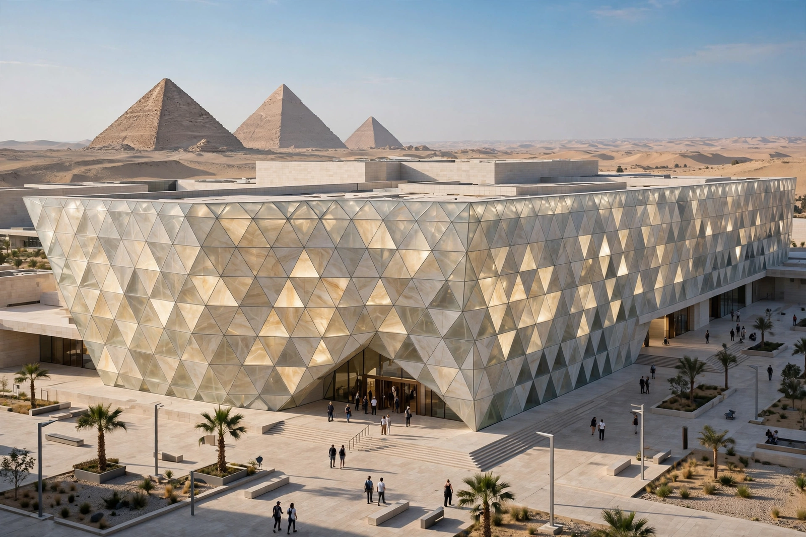

Grand Egyptian Museum

| Grand Egyptian Museum | |
| Location | Giza, Greater Cairo, Egypt |
|---|---|
| Established | announced 2002; phased opening from 2024 |
| Architect | Heneghan Peng Architects (competition winners) |
| Collection size | more than 100,000 artefacts |
| Area | c. 500,000 m² site; largest museum complex in the world |
The Grand Egyptian Museum (GEM; Arabic: المتحف المصري الكبير), also known as the Giza Museum, is an archaeological museum in Giza, Egypt, about two kilometres from the pyramids of the Giza necropolis. When fully opened it will be the largest museum complex in the world, housing the complete collection of artefacts from the tomb of Tutankhamun together for the first time, along with tens of thousands of other pharaonic treasures.
- History and design
- Collections
- Construction and opening
History and design
The museum was conceived to relieve the overcrowded Egyptian Museum in Tahrir Square, Cairo, founded in 1902. An international architectural competition launched in 2002 drew some 1,557 entries from 82 countries, one of the largest competitions ever held; it was won by the Irish practice Heneghan Peng. The design aligns the museum's great translucent stone façade and its internal axes with the three Giza pyramids, so that visitors see the pyramids framed from the entrance plaza. A colossal statue of Ramesses II, moved from Ramses Square in Cairo in 2006 and transported to the site, dominates the entrance atrium, from which a grand staircase lined with monumental statues ascends to the galleries.
Collections
The museum holds more than 100,000 artefacts. Its centrepiece is the complete Tutankhamun collection — over 5,000 objects from the boy king's tomb, most never previously displayed, including his golden mask (transferred from the old museum), chariots, beds, jewellery and the nested shrines. Other highlights include the Khufu solar boat, moved from beside the Great Pyramid in 2021, and the Hemiunu statue of the architect of the Great Pyramid. A state-of-the-art conservation centre, among the largest in the world, prepared the artefacts for display.
Construction and opening
Ground was broken in the mid-2000s, but the project was repeatedly delayed by the 2011 revolution, funding difficulties, regional instability and the COVID-19 pandemic; costs rose to around US$1 billion or more. Trial and phased openings of parts of the complex — the atrium, grand staircase and some galleries — began in 2023–2024, with the full formal opening, including the Tutankhamun galleries, repeatedly announced and rescheduled.
See also: Khufu; Egyptian pyramids; Tutankhamun; Egyptian Museum.